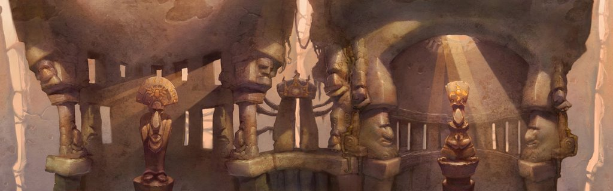

Released on September 19, 2005. Tak and his old pal Lok compete together in the Great Juju Challenge for the fate of their village in this co-op time-attack adventure.
Overview
Gameplay
Tak: The Great Juju Challenge takes a completely unique approach to the 3D platformer genre, deciding
to focus on co-op and speedrunning. Players still platform, fight enemies, and use Juju spells,
but now instead of just Tak, Lok joins the team controlled by a second player. Both players must
work together to solve puzzles, defeat enemies, and make it to the end of each stage in as fast a
time as possible, making use of Tak and Lok's unique abilities. In between every few stages, players
also get to take a break from normal gameplay by participating in bumper car boss fights.
Story
Tak and Lok join the Great Juju Challenge on behalf of the Pupununu village alongside rival teams
from other villages. The winners of the challenge gain the favor of the Moon Juju for the next 60
years, so Tak and Lok must do their best to win and secure the future of their village while staying
wary of the Black Mist tribe's dirty tricks.
Art/Presentation
The art style of Tak 3 keeps many of the natural and tribal motifs of the first two games, but this
times leans heavily into grand architecture, mainly Greek. It reflects this adventure's grander
scale and the setting of its hubworld in the realm of the Juju gods.

Jason Marsden and Patrick Warburton once again return as Tak and Lok, this time as the main duo of
the game. Much of the time in this game is spent in humorous dialogue between these two characters,
perfectly sold by these professional voice actors.
The soundtrack of Tak: The Great Juju Challenge, manages to perfectly combine the tribal and rock
sounds of the series with the symphonic themes the previous entry had played with, reflecting the
grand scale of the titular Great Juju Challenge.
My Opinions
This game has granted me countless hours of fun. Not many games have the guts to go all in on
co-op, and even fewer get it as right as Tak: The Great Juju Challenge. If you have someone to
play it with, the experience of solving puzzles and trying to go for a perfect time with a friend
is unrivaled. The writing in this game is also probably the most hilarious writing I have ever
seen in a game, and the actors absolutely kill it too. The banter between Tak and Lok is perfection
and is the glue that holds this entire game together.